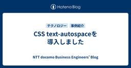

NTT docomo Business Engineers' Blog
https://engineers.ntt.com/
NTTドコモビジネス（旧NTT Com）のエンジニアによるブログです。
フィード

ACL 2026の概要とPersonalization系論文の紹介 4
4
NTT docomo Business Engineers' Blog
本記事は先日開催されたACL 2026についてのものです。 ACL 2026は計算言語学や自然言語処理に関するTier1の国際会議であり、昨今流行りのLLMや生成AIに関する研究も多く発表されています。 ここではACL 2026がどのような国際会議かということについて、開催規模や投稿論文の傾向などの観点から紹介します。 またACL 2026に採択された論文の中から一部を取り上げ、その内容について説明します。 はじめに ACLについて 開催規模 論文数の増加と生成AI対策 採択傾向 Best Papers 論文紹介 ClusterRAG: Cluster-Based Collaborative …
1日前

CSS text-autospaceを導入しました 59
NTT docomo Business Engineers' Blog
最近、新たなCSSプロパティ text-autospace が主要なWebブラウザーでサポートされました。どうしても和文と欧文の交ぜ書きが多くなる技術ブログにおいて、待望のプロパティです。そのあらましと、このブログにおける採用について紹介します。 やったこと 背景 将来 デジタル改革推進部の小林です。普段は社内ID基盤のプロダクトオーナーをやっています。きょうはブログ運営チームの一員として、この記事を書いています。 この記事のエッセンスとしては「やったこと」と「将来」をお読みいただければ十分ご理解いただけることと思います。「背景」は読み物としてお楽しみください。 やったこと 2026年6月末に…
4日前

ドキュメントAI rokadoc のエンタープライズ対応 〜チーム利用とエージェントワークフローへの進化〜
NTT docomo Business Engineers' Blog
こんにちは。イノベーションセンター Generative AI チームの小川です。 今回は、私たちのチームで開発しているドキュメントAI「rokadoc」が、エンタープライズでの利用に向けてどのように進化しているのかを紹介します。 本記事では、ドキュメントAIである rokadoc のエンタープライズ対応について、チーム利用やエージェントワークフローなどの新機能と、その裏側の仕組みを紹介します。 変換精度を支える技術要素は「生成AI向けのドキュメント変換技術 rokadoc 〜高い精度をどのように実現しているのか〜」で紹介していますので、こちらもぜひご参照ください。 rokadoc とは 非構…
10日前
docomo business SIGN™でIoT運用はどう変わる？「デバイスアクセス」と「フローコレクター」を試してみた
NTT docomo Business Engineers' Blog
IoTの活用が広がる中で、本格的にビジネス活用に取り組む企業が増えています。 しかし、いざ構築・運用を始めると、遠隔デバイスの管理やセキュリティ確保に課題を感じるケースも多いのではないでしょうか。本記事では、NTTドコモビジネスが提供するIoT向けネットワークプラットフォーム「docomo business SIGN™」の機能の中から、運用に役立つ「デバイスアクセス」と「フローコレクター」を実際に試した様子をご紹介します。 はじめに docomo business SIGN™とは docomo business SIGN™におけるデバイスアクセスとフローコレクター デバイスアクセス フローコレ…
15日前
最大トークン数制約下でのLLMベースJSON生成手法がIJCNN2026に採択されました
NTT docomo Business Engineers' Blog
こんにちは。イノベーションセンターの加藤です。先日私たちのLLMベースJSON生成についての論文がニューラルネットワーク分野の国際会議IJCNN2026に採択され、ポスター発表を行いました。本稿ではその発表内容を紹介します。
16日前
第5回セキュリティ若手の会 協賛・登壇レポート 〜注目コミュニティへの参加と緊張の初登壇〜
NTT docomo Business Engineers' Blog
初めまして！ NTTドコモビジネス情報セキュリティ部の池山と申します。 未経験からセキュリティ分野に飛び込み、現在は脅威情報を中心に業務を担当しています。 2026年6月13日に開催された「第5回セキュリティ若手の会」にて、ドコモグループ（NTTドコモ・NTTドコモビジネス）はゴールドスポンサーとして協賛し、講演の機会をいただきました。 この記事では、初の外部登壇かつ初参加となった「セキュリティ若手の会」について、ギリギリ若手（社会人3年目）の視点から当日の様子をご紹介します。 セキュリティ若手の会とは？ 当日の様子 LT＆交流会 スポンサー講演登壇 最後に セキュリティ若手の会とは？ 「セキ…
23日前
Gemini で Redmine の過去知見をフル活用！チケット対応の自動化に使える RAG の実践例
NTT docomo Business Engineers' Blog
こんにちは。コミュニケーション&アプリケーションサービス部で業務支援システムの開発をしている山中です。 先日、自社の Google Cloud 環境で利用できる Gemini API を活用し、Redmine で管理している過去のチケットの内容に基づいて、新規のアラートや問い合わせチケットに対する自動アシストを行う仕組みを構築しました。 その具体的な方法と、実際に導入して感じた効果や感想をご紹介します。 Redmine によるチケット管理の現場のリアル チケット情報を引き抜いて外付けで RAG ナレッジベースを作る 構造化出力によるフォーマット固定がポイント ベテランのノウハウを一瞬で再現！ …
24日前
あなたの隣に這い寄るレジプロ ― BSides Tokyo 2026 登壇レポ
NTT docomo Business Engineers' Blog
皆さまどうもこんにちは、@strinsert1Na という人です。 普段は情報セキュリティ部のマネージャーとして働いている筆者ですが、「たまには羽を伸ばしたい!」というモチベーションから先月開催されたセキュリティカンファレンス「BSides Tokyo 2026」に登壇し、近年世間を騒がせているレジプロ関連の話題についてお話ししてきました。 この記事では、筆者が発表した内容の簡単な紹介に加えて、カンファレンスの様子や参加してみた感想についてまとめたいと思います。 はじめに ― What is BSides Tokyo? 何を発表してきたのか? ― What is レジプロ? 全体を通しての感想…
1ヶ月前
サマーインターンシップ2026を開催します！
NTT docomo Business Engineers' Blog
NTTドコモビジネスを含めたドコモグループでは、この夏にインターンシップを開催します！この記事では、その中でも NTTドコモビジネスのリアルな業務を体験できる「現場受け入れ型インターンシップ」について紹介します。
2ヶ月前
Containerlab と vJunos で体験するクラウドネットワーク構築
NTT docomo Business Engineers' Blog
Containerlab と Juniper の無償仮想イメージ vJunos を使用し、データセンターネットワーク（NW）の定番アーキテクチャ「Leaf-Spine 構成」をゼロから構築するハンズオン記事です。eBGP による Underlay 構成を皮切りに、EVPN/VXLAN によるテナント L2 拡張、ESI-LAG を用いた冗長化、VRF Route Leaking によるインターネット接続ゲートウェイ模擬まで、クラウド NW の中核技術をひと通り体験できます。ハードウェア不要・無償イメージのみで動く手順と全設定例を掲載しています。 はじめに 前提知識 全体像 構築するトポロジ ポ…
2ヶ月前
ログの一元化と MCP で実現した生成 AI によるデバッグ自動化 ― SDPF クラウド開発事例
NTT docomo Business Engineers' Blog
Smart Data Platform (SDPF) クラウド/サーバーのネットワークオーケストレータ「ESI」の開発において、生成 AI を活用するために行ったログ基盤の整備や開発環境の工夫についてご紹介します。ログサーバーの新設や コーディング支援 AI（本事例では GitHub Copilot を使用）の導入により、エラー調査・開発の自動化を実現した事例です。 はじめに ESI について リアーキテクティングにおける課題と施策 ログ内容の精査 ― セキュリティ確保と安全なログ提供 ログサーバーの新設 ― サービス横断的なログ調査の実現 リポジトリ一元管理 ― コンテキスト不足の解消 展望…
2ヶ月前
日本語特化型AIガードレール「chakoshi」でGENIAC-PRIZE 2位を受賞しました
NTT docomo Business Engineers' Blog
NTTドコモビジネスが開発する日本語特化型AIガードレール「chakoshi」が、経済産業省・NEDO主催の懸賞金活用型プログラム「GENIAC-PRIZE」安全性領域で本審査2位を受賞しました。本記事では、chakoshiの概要と、単一構成から多層防御アーキテクチャへ進化させた技術的なポイント、そしてGENIAC-PRIZEでの取り組みについてお伝えします。 はじめに chakoshiとは GENIAC-PRIZEとは chakoshiの変遷 - 単一構成から多層構成への改善 - 単一構成の限界 リスクの特定と分類から防御機構を設計 1. 機密情報の流出 → PIIフィルタ、ルールベースフィ…
3ヶ月前
【OsecT】米国OTセキュリティカンファレンス「S4x26」に出展
NTT docomo Business Engineers' Blog
こんにちは、イノベーションセンターの石禾（GitHub：rhisawa）です。NTTドコモビジネス内製OT向け侵入検知システム（OT-IDS）であるOsecTの開発・運用・拡販業務に取り組んでおります。 このたび、米国マイアミで開催された大規模OTセキュリティカンファレンスS4x26にOsecTのスポンサー出展および聴講参加してまいりました。本記事では、世界中の専門家が集結した現地の模様と、最新のOTセキュリティトレンドについてお伝えします。 OTセキュリティとは OsecTとは S4x26の概要 スポンサーとしての出展 聴講者として Maritime: Compliance Risk Tru…
4ヶ月前
AI Agentを用いた既存設計業務の自動化に関する取り組み紹介
NTT docomo Business Engineers' Blog
2026年2月にNTTドコモおよびNECはAmazon Web Services（AWS）上に5Gコアネットワーク（以下、5GC）を構築し、国内初となるAWS上での5GC商用サービスを開始しました。 5GCとは、5G通信サービス全体を制御するコアネットワークを指します。加入者の認証・セッション管理からユーザーデータの転送制御に至るまで、通信事業者のサービス基盤として中枢的な役割を担うものとなります。 このAWS上の5GCを構築するにあたり、NTTドコモとNTTドコモビジネスはAI AgentとGitOpsを組み合わせた5GCの設計および構築の自動化を達成しました。 この取り組みについては3/2…
4ヶ月前
現場の「気づかない」を解決！OsecTの新機能：信号灯連携のご紹介
NTT docomo Business Engineers' Blog
こんにちは、開発業務のため部屋にいる信号灯と寝食苦楽をともに過ごしているイノベーションセンターの石禾（GitHub：rhisawa）です。 2026年3月に、OsecTの新機能として、パトライト社信号灯との連携機能をリリースしました。「メール通知では異常に気づきにくい」という課題を解決するために開発した、信号灯連携機能とその実現アーキテクチャについてご紹介します。 既存ネットワークの設定変更を回避し、導入のハードルを下げるためにモバイル回線を活用した構成を採用した点が大きな特徴です。開発にあたっての技術的な工夫を解説していきます。 OsecTとは 信号灯連携機能について なぜ「信号灯」なのか？…
4ヶ月前
サーバーもネットワーク機器も Entra ID でログインする — opkssh と RADIUS で認証を一元化した話
NTT docomo Business Engineers' Blog
みなさんこんにちは、イノベーションセンターの福田・村田です。 我々は、クラウドとオンプレミスそれぞれの検証環境を所有しており、オンプレミス製品やそれらをクラウドと組み合わせたハイブリッドクラウドの検証をおこなっています。 チームでの活動を続ける中で検証環境が拡大し、セキュリティ強化やコンプライアンス対応、DevOps 環境の整備がますます重要になってきました。 その一環でサーバーやネットワーク機器へのログイン認証を Entra ID に一元化する取り組みを行いました。 本記事では、その背景や技術選定の判断、運用して得られた知見を共有します。 具体的には以下のような内容を扱います。 SSH 公開…
4ヶ月前
インターンシップから入社、Black Hat Europe登壇までの道のり
NTT docomo Business Engineers' Blog
こんにちは、イノベーションセンターの松本です。普段はOffensive Securityプロジェクトのメンバーとして攻撃技術の調査・検証に取り組んでいます。 この記事では、我々のチームで開発したレッドチームフレームワーク「GHARF (GitHub Actions RedTeam Framework)」に関する取り組みと、筆者が学生時代に参加したインターンシップから入社を経てBlack Hat Europe 2025のArsenalで登壇するまでに至った道のりについて紹介します。 はじめに インターンシップ記事から2年 本記事の目的と概要 Offensive Securityプロジェクトの紹介…
4ヶ月前
OpenROADMの論理構成と運用制御 ― APNテストベッドで探る技術と運用手法(その3)
NTT docomo Business Engineers' Blog
イノベーションセンターの安井です。普段は全社検証網の技術検証、構築、運用を担当しています。 前回OpenROADMに準拠した光伝送網の概要・構築編― APNテストベッドで探る技術と運用手法(その2)にて、OpenROADMアーキテクチャにもとづく分離型 ROADM（Reconfigurable Optical Add/Drop Multiplexer）の物理構成と構築の勘所を紹介しました。 今回はその続編として、物理的に構築したROADMノードをソフトウェアからどのように制御・運用しているかを紹介します。 APNテストベッドでは、区間ごとに異なる伝送速度のトランスポンダーを使い分けており、構成…
4ヶ月前
金融営業から内製開発エンジニアへ ― 小さな行動で築いたキャリアの自律
NTT docomo Business Engineers' Blog
はじめに ビジネスdアプリ開発チームの徳原です。 私は地元の金融機関で12年間営業職として勤務した後、IT業界へキャリア転換しました。 本記事では、これまで私が転職で経験したことやキャリアの自律に向けた取り組みについて紹介します。 目次 はじめに これまでのキャリア 金融機関からIT業界へ 前職(外資コンサル)でのSE業務 キャリアを動かしたきっかけ 継続的な学習 前職のインフラ運用業務で苦戦したこと 前職のアプリ開発で苦戦したこと 現職へ転職することになったきっかけ 現職の業務とキャリアの広がり 学習の支援 外部発表の機会 現職のアプリ開発について これまでの経験から感じたキャリアの自律 お…
4ヶ月前
「自分でやり切る」だけでチームは強くならない
NTT docomo Business Engineers' Blog
NTTドコモビジネス イノベーションセンター テクノロジー部門 MetemcyberPJでの経験を通じ、私は「自分でやり切ること」と「チームとして成果を出すこと」のバランスの重要性を学びました。若手社員でも幅広い業務に挑戦できる環境の中で、責任感を持ちながらも周囲と協力することで、個人の成長とチーム成果の両立が可能であると実感しています。この記事では、その経験から得た学びと実践のポイントを紹介します。 はじめに 若手でも幅広く挑戦できる環境 スクラムという前提 私が経験した「抱え込み」 タスクの優先順位のつけ方 最後に はじめに こんにちは。イノベーションセンター テクノロジー部門 Metem…
4ヶ月前
最新のPyTorchで軽量OCRモデルPARSeqをTensorRT化する
NTT docomo Business Engineers' Blog
こんにちは。イノベーションセンターの加藤です。普段はコンピュータビジョンの技術開発やAIシステムの検証に取り組んでいます。今回は最新版のPyTorchを使って軽量なTransformerベースOCRモデルであるPARSeq(Permuted Autoregressive Sequence)をTensorRTモデルに変換して高速化した取り組みについて紹介します。
5ヶ月前
OpenROADMに準拠した光伝送網の概要・構築編― APNテストベッドで探る技術と運用手法(その2)
NTT docomo Business Engineers' Blog
イノベーションセンターIOWN推進室の鈴木と千葉です。普段は全社検証網の技術検証、構築、運用を担当しています。 前回オープントランスポンダーの世界 ― APNテストベッドで探る技術と運用手法（その1）にて、クライアント信号を光波長信号に変換する「オープントランスポンダー」を取り上げました。 今回はその続編として光ネットワークにおいて波長信号の多重化・分波、スイッチング、および光信号の増幅・パワー調整を一手に担うROADM（Reconfigurable Optical Add/Drop Multiplexer）の物理構築について実務的な設計ポイントや構築の勘所を紹介します。 OpenROADMア…
5ヶ月前
セキュリティカンファレンス「NCA Annual Conference 2025」に登壇してきました
NTT docomo Business Engineers' Blog
こんにちは、イノベーションセンターのNetwork Analytics for Security（NA4Sec）プロジェクトの山門です。 この記事では、2025年12月18日-19日に開催されたカンファレンスNCA Annual Conference 2025へ登壇してきた模様を紹介します。 組織におけるドメイン名の「終活（廃棄）」に伴うリスクをテーマに、利用終了ドメイン名に対する2.3億件のログ分析結果を説明しました。ECS（EDNS-Client-Subnet）を用いた分析により、「利用終了後も攻撃・スキャンが絶えない」という実態や、観測行為自体が攻撃を誘発する「観察者効果」といった興味深…
5ヶ月前
セキュリティカンファレンス「JSAC2026」に登壇してきた話
NTT docomo Business Engineers' Blog
みなさんこんにちは、イノベーションセンターの益本(@masaomi346)です。 Network Analytics for Security (以下、NA4Sec) プロジェクトのメンバーとして活動しています。 この記事では、2026年1月22日・23日に開催されたセキュリティカンファレンスJSAC2026で登壇したことについて紹介します。 ぜひ最後まで読んでみてください。 JSACについて JSAC (Joint Security Analyst Conference) はJPCERT/CCが主催するセキュリティカンファレンスで、現場のセキュリティアナリストが集い、高度化するサイバー攻撃に…
6ヶ月前
ビジネスdアプリの社内報PCブラウザ版リリース：レスポンシブ対応とGTM導入で実現した開発効率化
NTT docomo Business Engineers' Blog
はじめに こんにちは、ビジネスdアプリ開発チームの露口・德原です。 これまでモバイル端末向けに展開してきた「ビジネスdアプリ」の社内報機能に、PCブラウザ版が加わりました。本記事では、その社内報PCブラウザ版の開発についてご紹介します。 ビジネスdアプリについては過去の記事をご覧ください。 ・サーバレスをフル活用したビジネスｄアプリのアーキテクチャ（前編） ・サーバレスをフル活用したビジネスｄアプリのアーキテクチャ（後編） 目次 はじめに 目次 社内報機能の概要 主な機能の紹介 リソースを最小限に抑える2つの工夫 フロントエンド：CSS（@media）によるレスポンシブ対応への一本化 バックエ…
6ヶ月前
えっ、ソース名とパッケージ名って違うんですか？ ― 脅威インテリジェンスインターンで挑んだSBOM調査バトル
NTT docomo Business Engineers' Blog
はじめに こんにちは、NTTドコモグループの現場受け入れ型インターンシップ2025に参加した博士1年の樋口です。 私が参加したポストは、【D3】脅威インテリジェンスを生成・活用するセキュリティエンジニア/アナリストです。前半は Network Analytics for Security PJ（以下、NA4Sec）、後半は Metemcyber PJ（以下、Metemcyber）に参加し、幅広い内容を学ぶことができました。 本体験記が、来年以降に参加を検討されている方の一助となりましたら幸いです。 はじめに インターンシップの説明 参加した経緯 概要 SBOM SBOMとは何か フォーマットご…
7ヶ月前
データ分析開発合宿を3年続けて分かった運営のコツと課題
NTT docomo Business Engineers' Blog
この記事は、NTT docomo Business Advent Calendar 2025 14日目の記事です。 こんにちは、社内データ分析コミュニティ「データサイエンスちゃんねる」の是松です。 普段はジェネレーティブAIタスクフォースに所属しており、特定の業務に特化したAIエージェントの開発などを行っています。 データサイエンスちゃんねるでは、社内向けの輪読会やKaggle LT会など、社内のデータサイエンスに興味があるメンバーの交流を目的とした活動を行っています。 本記事では、データサイエンスちゃんねるの目玉活動になりつつある「データ分析開発合宿」について、運営目線での話をしたいと思いま…
7ヶ月前
利用終了ドメイン名を狙うなりすましメール―DMARC Report分析から見えた実態と対策
NTT docomo Business Engineers' Blog
この記事は、NTT docomo Business Advent Calendar 2025 25日目の記事です。 みなさんこんにちは、イノベーションセンターの冨樫です。Network Analytics for Security1 (以下、NA4Sec)プロジェクトのメンバーとして活動しています。 NTTドコモビジネスでは、ドロップキャッチ等のリスクに対応するため、すでに使い道がなくなったドメイン名(以下、利用終了ドメイン名)であっても、永年保有するポリシーを採用しています。 ただ、利用終了ドメイン名を保持し続けることで、金銭面・管理面のコストがかかり続けます。 また、不必要にドメイン名を保…
7ヶ月前
私のAIって安全？AIセーフティ評価ツールを試してみた。
NTT docomo Business Engineers' Blog
この記事はNTT docomo Business Advent Calendar 2025 24日目の記事です。 様々な場面でのLLM（Large Language Model）の利活用が進む中で安全性の確保は、セキュリティなどの信頼性が求められる分野では重要な課題です。 そこで本記事では「AIセーフティに関する評価観点ガイド」とそれに基づいた安全性評価を行えるツールである「AIセーフティ評価環境」の使い方について紹介します。 はじめに AIセーフティ評価観点ガイドの概要 AIセーフティ評価環境の概要 評価の概要 定量評価 定性評価 実際に使ってみた 評価の設定と実行 環境構築 評価内容の定義…
7ヶ月前
【GRFICSv3】新しく公開された化学プラントシミュレータを動かして、IDSで攻撃を検知してみた
NTT docomo Business Engineers' Blog
2025年10月に公開された「GRFICSv3」の環境構築手順と、制御ネットワーク向けIDS「OsecT」を組み合わせた検証記事です。 専用のダミーIFを用いたパケット可視化の手法や、Pythonスクリプトによる攻撃の実行、およびIDSでの検知アラート発生の様子を紹介します。 GRFICSv3とは GRFICSv3の実行 GRFICSv3の画面紹介 シミュレータ画面 エンジニアリングワークステーション画面 攻撃者端末の画面 Caldera画面 PLC (OpenPLC) 画面 HMI (Scada-LTS) 画面 ルータ/ファイアウォール画面 GRFICSv3の所感 OT IDS OsecTに…
7ヶ月前